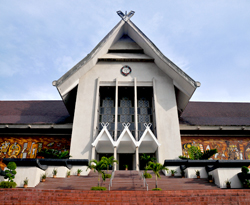

WELCOME TO MUZIUM NEGARA OFFICIAL PORTAL
MUZIUM NEGARA
Muzium Negara is a beautiful building featuring traditional Malay architecture and stands majestically in the heart of Kuala Lumpur as a national treasure. Muzium Negara which was upgraded in 2008 shows an interesting and interactive medium for visitors to explore the history of Malaysia starting from the prehistoric era until now. Muzium Negara is headed by a Director and placed under the administration of the Department of Museums Malaysia, Ministry of Tourism, Arts and Culture..
The history of museums in Malaysia began in 1883 when the British government established the Perak Museum, Taiping. This was followed by the Sarawak Museum in Kuching in 1888 and subsequently Selangor Museum in 1906. In 1910, the management of Perak and Selangor Museums were consolidated under the Department of Museums of Federated Malay States. In 1930, the management was again separated as a step under the decentralized system implemented by the British government. Part of the Selangor Museum building was later destroyed by the bombing carried out by the Alliance Air Force on 10 March 1945. As a result, most of the collections were also destroyed. Two years after independence in 1959, the government appointed an architect, Mr. Ho Kok Hoe to design the proposed National Museum to be built on the ruins of the Selangor Museum. Its construction started in 1962 and on August 31, 1963, the Muzium Negara building was finally completed and opened by the Third Yang di-Pertuan Agong Tuanku Syed Putra Al-Haj Ibni Syed Hassan Jamalullail.
Video about visiting Muzium Negara from LOCCO Malaysia: